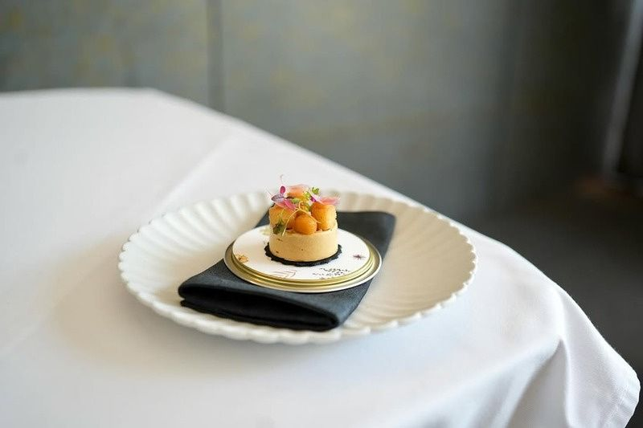
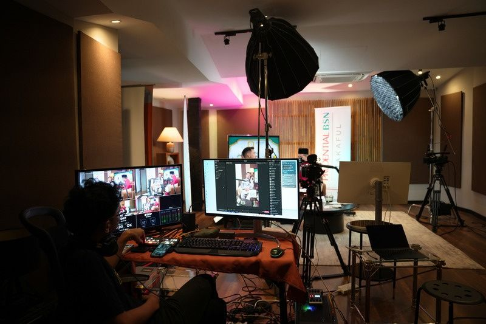

How we work
From the first call to final delivery.
Four stages, clear timelines and a deliverables list you can check off. No surprises on shoot day, and no surprises on the invoice.
Four stages, clear timelines and a deliverables list you can check off. No surprises on shoot day, and no surprises on the invoice.
It is rarely the lighting or the lens. It happens because nobody agreed on the decision the viewer is supposed to make, or because the deliverables were only discussed in the final week.
So we fix both early. By the end of the first stage you have a written brief; by the end of the second you have an approved schedule and deliverables list. After that, production is just execution.
The team that writes the brief is the team on location, and the team in the edit. That is the only reason these timelines hold.
 Planning day
Planning day
Every stage has a clear exit point — a document, a schedule, a cut or a report. You never have to guess where the project stands.
What happens: one call or meeting to understand the brand, the business objective, the audience, the channels, the budget band and the real deadline. We ask what decision you want the viewer to make — not just what you want to say.
What you get: a one-page written brief, a scope recommendation and an indicative quote.
Typical timeline: 2–5 working days from first contact.
What happens: creative direction, treatment, script and storyboard, plus the practical half — shoot plan, locations, talent, call sheet and, for events, the run-of-show. This is also where deliverables are locked: how many cuts, which ratios, which languages.
What you get: a treatment deck, a production schedule, an approved deliverables list and the final written quote.
Typical timeline: 1–2 weeks for most projects; longer where locations or talent need clearance.
What happens: the shoot day or the live event, run against the call sheet you already approved. Then post — edit, colour grade, sound, graphics and subtitles. You see a first cut, give notes in one consolidated round, and we lock.
What you get: the full cut, short versions, vertical formats for social, BM/EN subtitles and the stills library from the day.
Typical timeline: a one-day content shoot delivers in 1–2 weeks; a full film in 3–4 weeks; event highlights can go out the same day.
What happens: the content goes where it has to work. Publishing and social scheduling, paid media and boosting, DOOH adaptation for the big screens, a press release or press conference if the launch needs one — then measurement.
What you get: a channel plan, assets recut for each placement, and a performance report with recommendations for the next round.
Typical timeline: ongoing — monthly reporting on retainers, or a single closing report after a campaign.
Stages look tidy on a page. The real day is the management of time, light and people — which is exactly why the planning is done up front.

Every shoot starts from an agreed shot order and schedule. It means the crew knows the next set-up before the current one is finished, and the client on location knows exactly when their decision is needed.
See this shoot →


For anything that happens more than once — a monthly podcast, a weekly social feed, a corporate series — we build a repeatable layout: the same camera positions, lighting and audio every time.
The effect is twofold: every episode looks like the same series, and the team moves faster on record day because nobody is reinventing the set-up.
Where possible we schedule social shoots next to the main record day — one set-up, two outputs.
See the podcast sets →
We walk the run-of-show before the day, mark the moments that must be captured, and place the crew accordingly. On large events, highlight cutdowns can go out while the room is still full.
See event production →Klasse turned our vision into content that genuinely stood out.
It depends on scope. A content shoot can wrap in 1–2 weeks, a full film usually runs 3–4 weeks, and a complete campaign spanning strategy, production and distribution typically runs 4–8 weeks. We set a written timeline during Discover, before any work starts.
Bahasa Melayu and English, plus bilingual content for Malaysian and regional audiences. BM/EN subtitles are standard on every video deliverable; further localisation is available on request.
Yes. From concept and creative strategy through to the shoot, post-production, distribution and reporting — all four stages are run by the same team. You can also engage us for a single stage only, for example post-production on existing footage.
We are based at Arcoris SOHO in Kuala Lumpur and shoot across the Klang Valley and Malaysia. For regional projects we coordinate logistics, permits and local crew as needed — travel costs are listed separately in the quote.
Contact us through the form on the Contact page, by email, or on WhatsApp. Tell us the brand, the objective, the channels and the deadline — we come back with an indicative quote after the Discover call, and the final written quote at the end of Develop.
The number of rounds is stated in the quote — usually one to two. Notes are consolidated into a single list per round, which keeps the edit coherent and the timeline intact.
Tell us the brand, the objective and the deadline. You'll have a written brief and an indicative quote before you commit to anything.